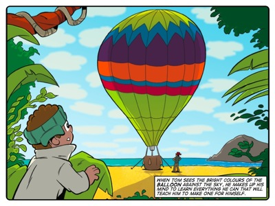
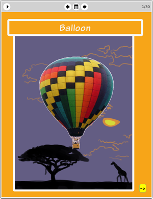

Story: The Balloon Bet
Theme: Using information scientifically.
Synopsis
It’s love at first sight when Tom sees a hot air balloon. He decides to learn the intricacies of balloon construction and starts doing experiments with his own Helium-fuelled balloons. Tom explains his plan to the other Thunderbolt Kids: he will float several trial balloons and record the relevant results from each experiment. His first effort is a failure and Lazlo taunts him into making a rash bet: in three days, he will send his beloved robot up so high in the balloon that they’ll run out of measuring string.
This story demonstrates sensible use of the scientific method in Tom’s attempts to achieve his purpose, i.e., to perfect his balloon. He gets some preparatory information from the balloonist he meets and uses this in setting up the basics of his experiment. But he must work out the details to improve on his design. He moves through each step of getting the balloon higher by employing the scientific method of “observation - hypothesis - experimentation.”
So he observes his first trial balloon popping immediately and asks a question to form a hypothesises that he used too much gas. So he experiments by sending up another trial balloon with less gas and observes his results. Thus he completes the scientific method’s circle before spinning it again the next day. Through each stage in this cycle, Tom records all the data – or information – that relates to the conditions of the experiment. By analysing this information he is able to make intelligent hypotheses for improving the experiment.
Activity
This activity challenges learners to create a parachute toy. The purpose of the activity is to allow learners to practice the scientific cycle of building something, observing it's performance and then improving on the design. To some extent this activity mirrors Tom's experiments in the story. And even though it is much less complicated, learners can still exhibit the same degree of intensity and discipline as Tom in improving their designs.
In doing this activity we want learners to recognise that their first attempt at making something does not have to be their last. We want them to realise that their first efforts are seldom their best and that there is always room for improvement. Tom's focus is a good model to follow for this attitude towards achieving excellence.

The eToys project: Balloon
In this project Tom shows learners how to take the information (data) produced by a slider control and transfer or feed it into a hot air balloon object. Thus learners discover for themselves that the changing numbers of one object can be used to control another objects by changing its numbers proportionally.